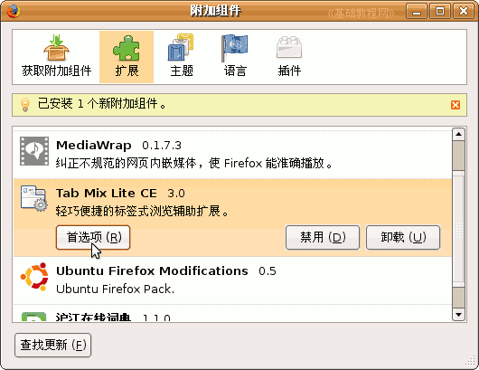

Firefox3 基础教程
作者：TeliuTe 来源：基础教程网
四、Tab Mix Lite CE扩展 返回目录 下一课安装Tab Mix Lite CE扩展，可以很好的使用标签式浏览，扩展大小仅27KB，下面我们来看一个练习；
1、Tab Mix Lite CE扩展
1）下载地址：http://addons.sociz.com/firefox/54/；
本地下载：Tab Mix Lite CE 3.0 （点右键选“链接另存为”）
2）安装：先打开Firefox窗口，然后把xpi文件拖到窗口里，出来一个安装对话框，
稍等一会儿，点下面的“立即安装”进行安装；
3）接下来出来一个要求“重启”的对话框，点里面的“重新启动 Firefox”；
重启以后完成安装，然后我们可以继续设置它的选项；
2、设置选项
1）点菜单“工具－附加组件”进入扩展管理器，
找到Tab Mix Lite CE，单击选中，然后点它下边的“首选项”按钮，出来一个选项面板；

2）在第一个“常规”里，主要是哪些链接在新标签页打开，这儿不用改什么；
3）再点上边的“事件”标签，把第一个“关闭多个标签页警告”的勾去掉，
把中间的智能选择改为“选择左边的标签”，下面的“紧邻当前标签页”也勾上；
4）再点上边的“外观”选项，在里面把标签宽度，改小一些，把下面的样式选择“不显示关闭按钮”
注意上边有一个“将标签栏移至窗口底部”，可以把标签放下边去，可以根据自己的习惯选择；
5）再点上边的“功能”选项，中间的“双击标签”，设为关闭标签页，这样点两下就可以关闭标签页，
下面的恢复标签页可以设少一些；
6）最后的“菜单”标签不用修改，看一下即可，
点“确定”就完成选项的设置，关闭“附加组件”对话框，返回窗口；本节学习了基本操作，如果你成功地完成了练习，请继续学习下一课内容；
本教程由86团学校TeliuTe制作|著作权所有
基础教程网：http://teliute.org
美丽的校园……
转载和引用本站内容，请保留版权信息和本站链接。